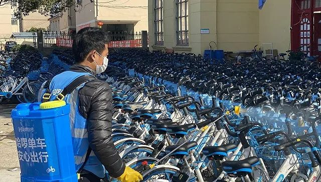

口罩的 “非常 ”加法：日产量或将两亿 ，仍会短缺还是饱和？
原文链接 [备份链接]() *************▲*************2020年2月18日，呼和浩特一家公司的员工正在赶制口罩。 （新华社/图） 全文共5770字，阅读大约需要8分钟。 虽然是在生产口罩，杨洋自己家里的口罩还 …

图片来源：哈啰单车
记者：林北辰
“
“戴口罩、戴帽子，擦完手把后骑单车去上班，是最近的常态。”
”
“戴口罩、戴帽子，擦完手把后骑单车去上班，是最近的常态。”一位在上海返工的用户说。
新冠病毒持续影响交通出行，返工潮到来后，为了避免在公共交通上和人近距离接触，共享单车成为了很多民众短距离出行的首选，其中的消毒问题也成为用户在现阶段使用单车时的最大担忧。
据中国城市公共交通协会的公告，2月17日，中国城市公共交通协会完成了《互联网租赁自行车卫生保障运营规范》（以下简称《规范》）团体标准的立项工作，该项标准由美团单车发起，青桔单车、哈啰出行等出行企业联合参与编制，有望在三月中下旬正式对外发布。
《规范》将对共享单车消毒常态化和标准化，对共享单车日常卫生维护及突发公共卫生事件时期的消毒和维护提出了车辆卫生要求及运营人员要求，防止共享单车使用中的交叉感染。
据界面新闻记者了解，多个单车平台在疫情蔓延之初已施行消毒计划，大多以喷洒的方式对车把、车座、车锁、车筐等接触频繁部位进行消毒，美团、青桔、哈啰等公司均对外宣称施行“无差别消毒”。
哈啰单车上海运营负责人殷慎强对界面新闻记者表示，哈啰单车目前在上海市的消毒运维人员约有30至50人，这批人在大年初三后逐渐返工，主要以喷洒消毒原液的方式对交通要道处的单车进行无差别消毒，最初是对医院、商场附近的单车进行消毒，后来在写字楼、菜市场等相对更高频的场所附近进行消毒。
不过，殷慎强坦言，目前的人力不可能做到每一天都对全区内的单车进行消毒。
以上海为例，50人的消毒团队中约有一半是哈啰的原来员工，另外一半则是为了应对疫情新招募的人员，这批人分至上海的16个辖区，每个区仅有3至5人进行消毒工作，每人平均每天大约能对500至600台单车进行喷洒消毒，因此只能选择在车量密度比较高的地方进行消毒工作，无法做到完全覆盖。
据哈啰出行大数据，复工前期（2月6日-2月9日）餐饮店、地铁、大型超市是出行需求最大的地点，其中餐饮店尤其是必胜客、肯德基为出行需求最旺盛的地点；复工后（2月10日-12日）餐饮店、商务区、休闲广场、银行成为出行需求最大的地点，餐饮店仍为出行需求最旺盛的地点。
在大部分城市都选择复工的2月10日，以通勤为主的骑行需求明显上涨。
2月10日相比于2月9日的早高峰期间，哈啰单车在北京、广州、上海的骑行量分别增加了104%、88%和81%。在晚高峰时间，北京、广州、上海的增长率分别为87%、50%和52%，深圳则在当日晚高峰仅增加了7%。
不过，结合更早阶段的2月3日复工时间点来看，哈啰单车在2月3日至2月10日期间早晚高峰骑行量并不稳定，曾出现过明显的下降趋势。即使阶段性复工潮到来，单车需求依然不够稳定。
一位不愿具名的业内人士透露，本次疫情的爆发对共享单车行业打击巨大。疫情之后，全行业的订单量降低了70%至80%，即使返工后订单成倍增长，依然不能回到原先的水平。共享单车的消毒成为行业共识，未来这个行业的运营将面临更多的成本支出。
未经授权 禁止转载

原文链接 [备份链接]() *************▲*************2020年2月18日，呼和浩特一家公司的员工正在赶制口罩。 （新华社/图） 全文共5770字，阅读大约需要8分钟。 虽然是在生产口罩，杨洋自己家里的口罩还 …
原文链接 备份链接 摘要：疫情以来，企业复工日期一再调整，何时能回到办公室成为人们最关心的事情之一。2月10日以来，人们陆续回到岗位，有的经历旅途波折，有人面临待业裁员。经过这个漫长的假期，人们有种恍若隔世的感觉。不管怎样，返岗上班或许是 …
原文链接 备份链接 *************▲ *************2月10日，在太行山深处的河北石家庄市井陉县北良都村，北良都小学一名学生在家中利用网络听课学习。 （新华社 张秀科/图） 全文共3875字，阅读大约需要8分钟。 …
原文链接 备份链接 【财新网】（记者 丁捷）2月17日晚上10点，30岁的志愿者司机喻巅在接送完最后一名护士后，匆匆回到家。截至今天，是喻巅连续跑车的第25天。1月23日10时起，武汉“封城”，市公交、地铁、轮渡、长途客运暂停运营，机 …
原文链接 备份链接 地铁北京南站，拍摄：蔡星卓 记者：唐俊 “ 绝大部分城市地铁客流不足去年同期10%。 ” 受疫情影响，今年春运没有返程高峰。从1月29日开始，全国铁路、民航、公路客流同比降幅一直超过80%。虽然政策已经允许复工，但实际 …